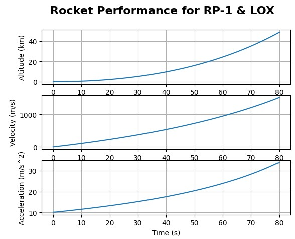

Overview
A comprehensive propulsion analysis project completed for AAE 462 (Rocket Propulsion) at Oregon State University. Using Python-based numerical simulation and NASA CEA thermochemical modeling, designed and compared six first-stage rocket booster configurations across three propulsion types, liquid, solid, and hybrid, each with two propellant combinations, to determine the most capable design based on performance, storage requirements, and environmental impact. All calculations and trajectory simulations were implemented in Python using NumPy, SciPy, Pint, and Cantera in Jupyter notebooks.
Mission Requirements
- Delta-V: 2,300 m/s (ideal, neglecting drag and gravity losses)
- Payload mass: 100,000 kg
- Propellant mass fraction: 0.9
- Burn time: under 100 seconds
- Average thrust: at least twice the liftoff weight
- Vehicle diameter constraint: 3 m
Propellant Combinations Analyzed
Liquid Rocket Engines
- RP-1 & LOX: Optimal O/F ratio of 2.3, Isp = 291.2 s
- LH2 & LOX: Optimal O/F ratio of 3.4, Isp ≈ 387 s
Solid Rocket Motors
- HTPB + Al + AP: Optimal O/F of 2.4 (11% HTPB, 19% Al, 70% AP), Isp = 286.7 s
- PVC + Al + AP: Optimal O/F of 2.0 (22% PVC, 12% Al, 66% AP), Isp = 276.6 s
Hybrid Rocket Motors
- HTPB + LOX: Starting O/F ~2, Isp = 289.6 s
- HTPB + H2O2: Optimal O/F ~3.5, Isp = 325.4 s
Methods & Tools
- Used NASA CEA to determine optimal oxidizer-to-fuel ratios and extract thermochemical properties (Isp, gamma, c*) for each propellant combination
- Applied the Tsiolkovsky rocket equation to size propellant mass and structural mass
- Calculated nozzle geometry (throat diameter, exit diameter, area ratio, nozzle length) and combustion chamber dimensions for each design
- Modeled propellant storage volumes and tank sizing within the 3 m diameter constraint
- Performed tank wall stress analysis using Aluminum 6061, accounting for liftoff acceleration loads
- For solid motors, calculated propellant burn rate, web thickness, and grain geometry
- For hybrid motors, modeled a time-varying O/F ratio using fuel regression rate equations and iterated combustion port radius over the burn duration
- Simulated flight trajectory (altitude, velocity, acceleration vs. time) using SciPy solve_ivp, solving the equations of motion for a vertical launch
- All calculations performed in Python using NumPy, SciPy, Pint, and Cantera in Jupyter notebooks
Key Results & Findings
- LH2 & LOX delivered the highest modeled Isp (approximately 387 s) but required substantially more tank volume due to liquid hydrogen's low density and cryogenic storage requirements
- HTPB + H2O2 outperformed HTPB + LOX in both efficiency and compactness, with a shorter oxidizer tank and no cryogenic requirements
- All six designs achieved similar altitude, velocity, and acceleration profiles, as each was optimized to meet the same mission requirements
- Environmental impact was a key differentiator: LH2 & LOX produce water, while solid motors using AP-based propellants generate hydrochloric acid and aluminum oxide
- Final recommendation: LH2 & LOX liquid engine, prioritizing the modeled specific impulse and exhaust composition despite the storage challenges
Skills Demonstrated
- Rocket propulsion analysis and propellant selection
- NASA CEA thermochemical modeling
- Nozzle and combustion chamber design
- Trajectory simulation using numerical ODE solvers
- Structural analysis of propellant tanks
- Python scientific computing (NumPy, SciPy, Pint, Cantera, Matplotlib)